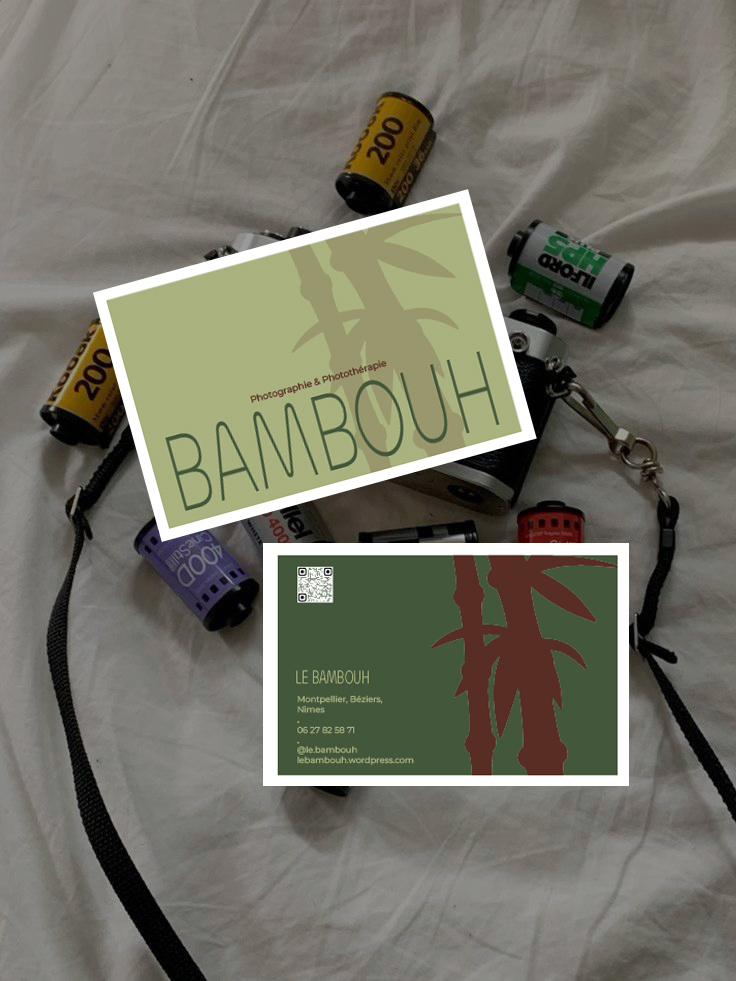

Graphisme · Carte de visite
Photographe
Le Bambouh
Une carte de visite pour @le.bambouh, photographe thérapeutique. Deux pistes pour trouver le bon équilibre entre photographie et accompagnement.
Quand une carte évoque davantage un institut qu’un photographe, il faut savoir revoir sa copie.

Ce qui s’est passé
Une intention,
un décalage.
En tant que graphiste, on est parfois trop plongée dans le projet. Une typographie douce, des couleurs peau, une mise en page épurée : tout semblait traduire le côté thérapeutique.
Mais, sans s’en rendre compte, on glisse vers l’univers du salon de massage. Le message de photographe disparaît. Même avec des croquis en amont, cela peut arriver.
Cette expérience m’a amenée à poser une règle dans mon processus : je montre toujours avant de finaliser.
Tester le message
« Tu vois quoi
en trois secondes ? »
Je présente le projet à trois personnes qui ne le connaissent pas : une personne qui correspond à la cible, une graphiste et une personne sans connaissance particulière du domaine.
Je leur pose une seule question : « Tu vois quoi en trois secondes ? »
Si deux personnes sur trois répondent « massage », je reprends la piste. L’enjeu n’est pas de défendre une belle composition, mais de vérifier que le message passe.

La V1 finale
Revenir
à l’essentiel.
Nous sommes revenus à l’essentiel : son nom lisible de loin, la texture qui signe son univers photographique et un verso qui respire. Le message devait être immédiat : il s’agit d’un photographe, pas d’un institut.
Faire appel à une graphiste, ce n’est pas seulement obtenir une belle carte. C’est aussi travailler avec quelqu’un qui sait se remettre en question pour que le message passe.